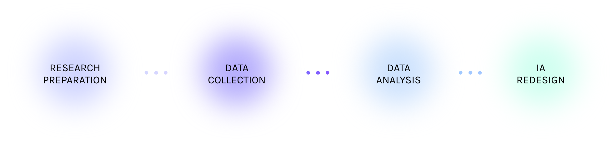

OVERVIEW
My team — Liz Estefan, Jessenia Morales and I conducted a Directive & Cautious Card Sort Study with 24 participants. They were asked to sort 48 cards based on item similarity and to take their time and be thoughtful in the process. The purpose of the study was to have a better understanding of our user's mental model, feedback about content, terminology and organization of UM’s Interactive Media program's website. In turn, we analyze the collected data to inform recommendations to redesign the information architecture of the site, so the users can find information and accomplish their tasks with ease.
RESEARCH PROCESS
ROLE
UX research
Data analysis
Information architecture
redesign
TIMELINE
1 Week
Feb 2020
TECHNOLOGY
Optimal Sort
Adobe XD
RESEARCH PREPARATION
CURRENT IA

DATA COLLECTION
DATA ANALYSIS
IA REDESIGN